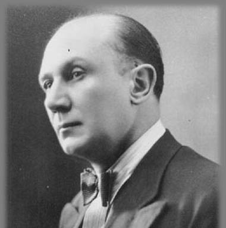

Nuestros Escritores
Hugo Ríos
Julio Migno

Alcides Greca

Edmundo Rostand
Hugo Eduardo Ríos
Nacido en San Javier (1938 - 2018). Hijo de familia humilde, su padre talabartero y su madre ama de casa. Tras mudarse a Santa Fe capital, estudió medicina en Córdoba. Escritor incansable, padre de 7 hijos, retornó a su pueblo natal donde desarrolló su obra literaria.
Bibliografía completa
- Cuentos de la Costa (2010)
- Crónicas del Río sin Orillas (1998)
- Memorias de un médico rural (2005)